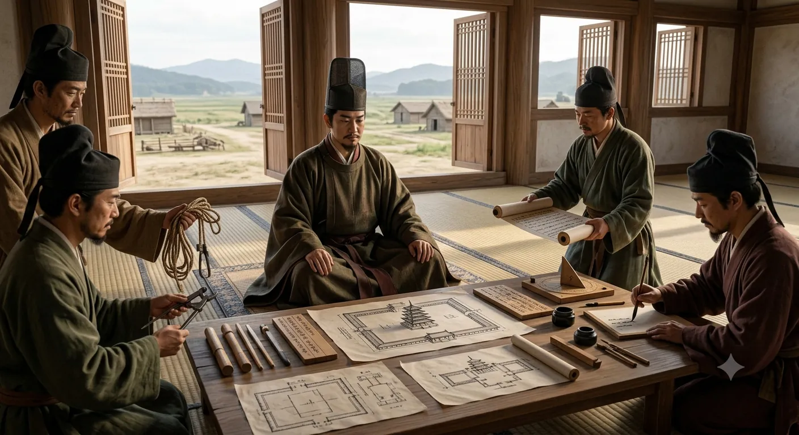

The Soga were deeply connected to immigrant lineages from the Korean kingdoms and played a central role in introducing continental systems of governance, literacy, medicine, astronomy, and diplomacy.
Prince Shōtoku, born into this lineage through his mother, inherited this worldview. His support for Buddhism was not only religious but political: it was a way to align Japan with the broader East Asian world system.
By establishing Shitenno-ji in Naniwa—Japan’s key international port—he created an institution that anchored imperial authority in a city directly connected to continental trade and ideas.

Prince Shotoku planning Shitenno-ji.